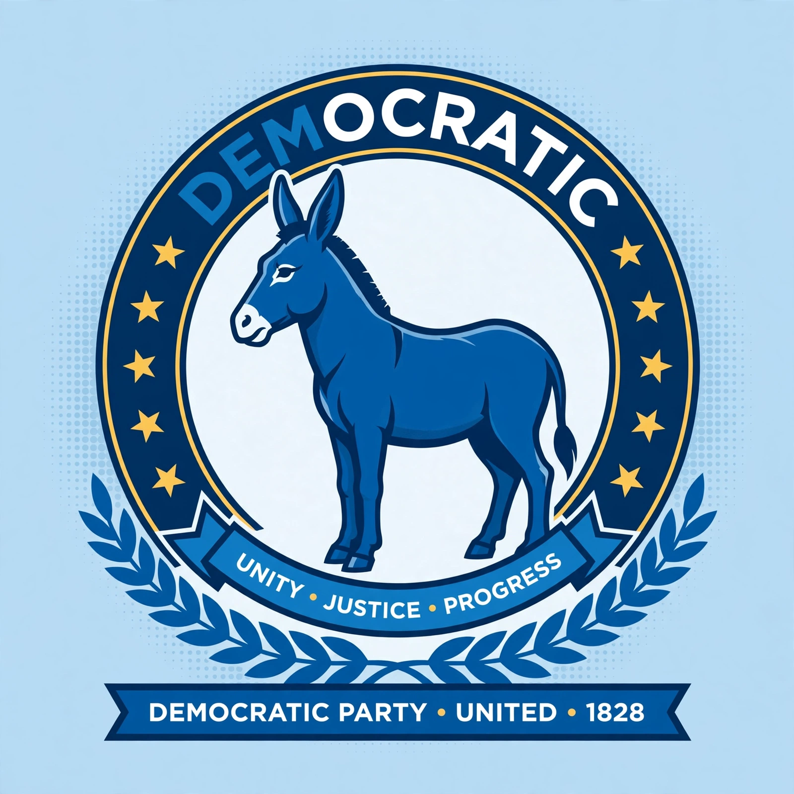

Democratic Party (United States)
| Founded | 1828 |
|---|---|
| Headquarters | Washington, D.C. |
| Ideology | Modern liberalism (majority); social democracy and centrism (factions) |
| Political position | Center to center-left |
| Color | Blue |
| Governing body | Democratic National Committee |

The Democratic Party is one of the two major contemporary political parties in the United States, alongside the Republican Party. Founded in 1828, it is the world's oldest active political party. Its main political rival has been the Republican Party since the 1850s, and the two parties have dominated American politics under the two-party system.
History
The party traces its origins to the coalition built by Andrew Jackson, championing the "common man" against the national bank and economic elites, while defending slavery and Indian removal. After splitting over slavery in 1860, the party opposed the Republicans through the Civil War and became the dominant party of the white South during and after the Reconstruction era, holding the "Solid South" for nearly a century.
In the 1890s, under William Jennings Bryan, the party adopted agrarian and anti-imperialist themes. Woodrow Wilson brought progressivism to the presidency, and Franklin D. Roosevelt's New Deal coalition — workers, unions, farmers, intellectuals, and the white South — made the Democrats the majority party for a generation. The party's embrace of civil rights under Harry Truman and Lyndon B. Johnson, who signed the Civil Rights Act of 1964, broke the old coalition: the South moved toward the Republicans while African Americans became a core Democratic constituency.
Modern era
After the centrist "New Democrat" turn under Bill Clinton, the party elected Barack Obama in 2008, the first African American president, and Joe Biden in 2020. Democrats generally support a mixed economy with regulation, social safety-net programs, environmental protection, abortion rights, LGBTQ rights, and a multilateral foreign policy. The party's platform is shaped by campaign finance rules and organized through the Democratic National Committee.